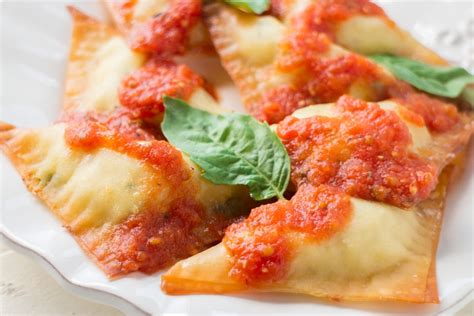

Three Cheese Ravioli

Make pasta from scratch! Roll, fill, and cut traditional Italian ravioli.
Ingredients
- 2 eggs
- 1 1/4 cup flour
- 3/4 tsp kosher salt
- 1 Tbsp olive oil
- 1/3 cup whole milk ricotta
- 1/4 cup shredded mozzarella cheese
- 2 Tbsp grated Parmesan cheese
- 2 cups marinara sauce
Steps
- Crack eggs in small bowl. Throw away shells and wash your hands.
- Measure 1 1/4 cup flour with accuracy. Spoon into measuring cups, use a flat edge to level. Do not overpack.
- Add flour, salt, oil, and eggs to large bowl. Stir with spoon until a shaggy dough forms. Gather into a ball.
- On a lightly floured surface, knead dough until smooth and elastic, 8-10 min.
- Wrap dough in plastic wrap and rest at room temperature for 30 minutes.
- Meanwhile, make filling. Add ricotta, mozzarella, and Parmesan to small bowl. Stir and combine.
- Divide dough into 6 pieces. On a lightly floured surface roll 2 pieces into very thin rectangles, slightly larger than the mold.
- Set one piece of dough on top of mold, covering the zigzags. Use fingers to lightly press dough into holes.
- Add 1 level teaspoon cheese filling to each hole
- Set second piece of dough on top. Roll with rolling pin, pressing in all directions until zigzags are visible.
- Remove top of mold. Flip upside down and pop out ravioli. Repeat steps 7-11 twice to make 24 ravioli.
- Bring pot of slated water to boil. Cook ravioli 2-3 min, until floating. Drain in colander and serve with warm marinara. TASTE & SHARE!